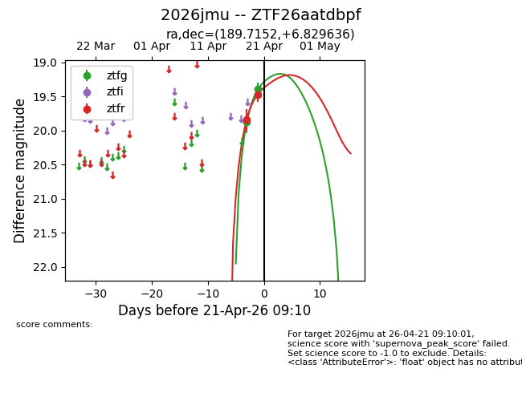
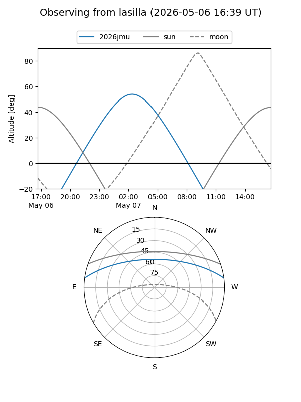
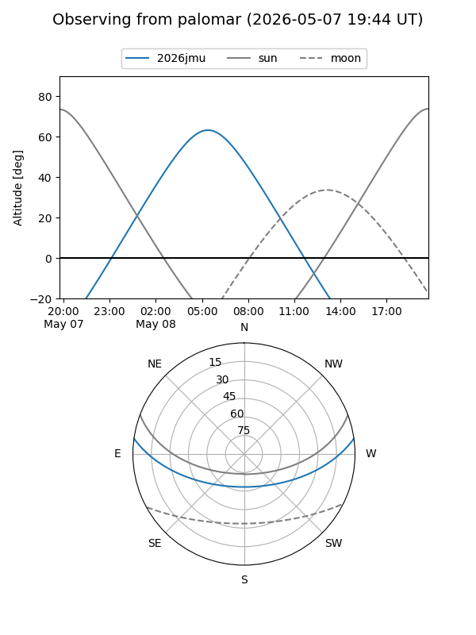
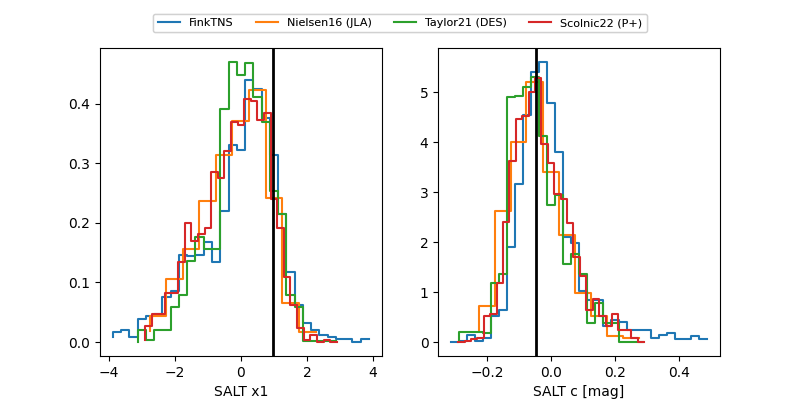

2026jmu
Target 2026jmu at 2026-04-21 09:14
Aliases and brokers:
FINK: link
Lasair: link
ALeRCE: link
TNS: link
YSE: link
alt names
ZTF26aatdbpf (ztf,fink_ztf)
2026jmu (tns,yse)
Coordinates:
equatorial (ra, dec) = 189.7152,+6.82964
equatorial (HMS+DMS) = 12:38:51.64,+06:49:46.69
galactic (l, b) = (293.9926,+69.48279)
Flags:
Photometry:
last ztfg=19.39, ztfr=19.47
2 ztfg, 2 ztfr detections
Lightcurve

Visibility


Additional plots
